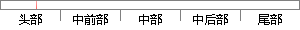

提出了一种时差与时间伸缩因子联合估计的快速算法。
片段位置图

相似结果|
相似片段 1：快速实现方法，大大减小了运算量。文献[82]通过引入有限点 sinc插值以及牛顿迭代求根法，提出了一种时差与时间伸缩因子联合估计的快速算法。 第二类方式中，联合估计时差及时间多普勒差。该方式首先利用
|
※ 片段修改建议 ※
近似词参考：- 时间：时候
- 联合：结合 团结
- 估计：估量 预计
系统自动生成语句：提出了一种时差与时候伸缩因子结合估量的快速算法。
注：本片段修改建议为系统自动生成，仅供参考。